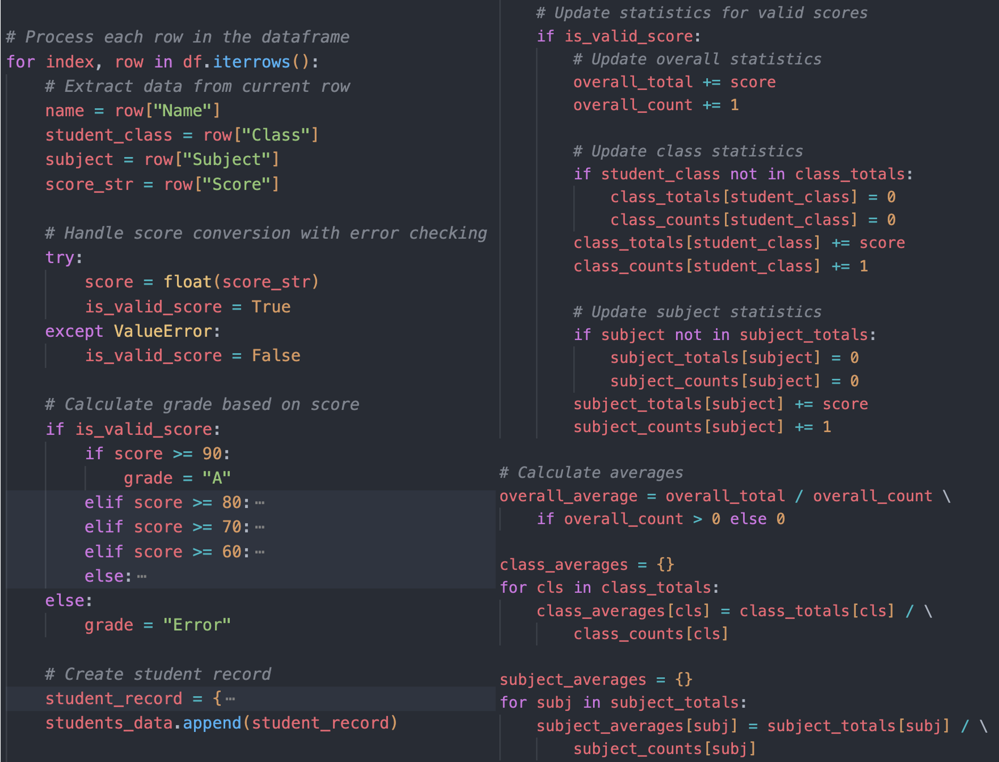
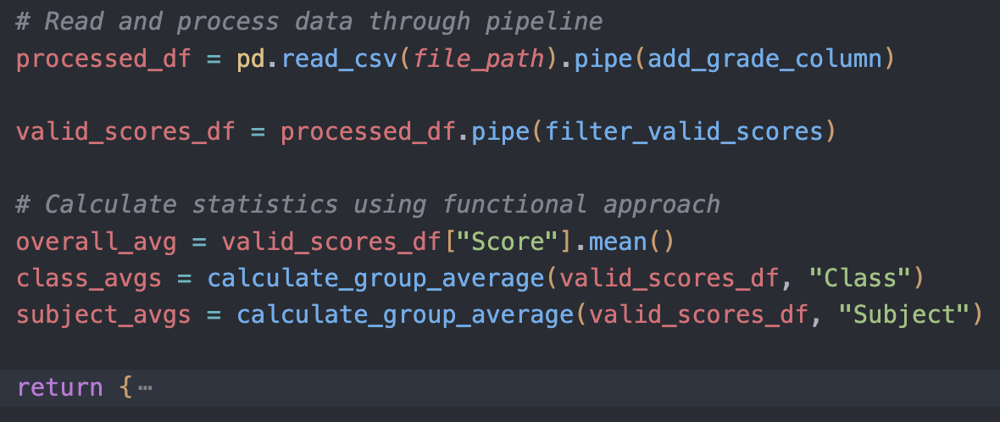
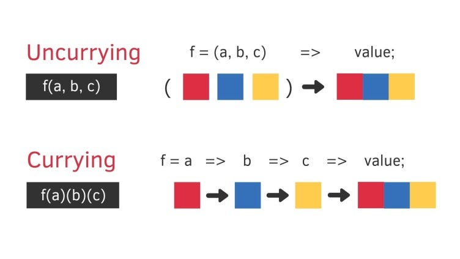
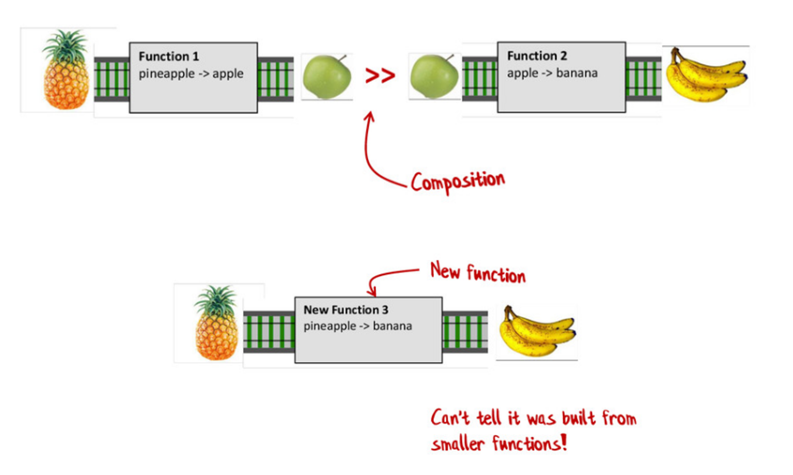
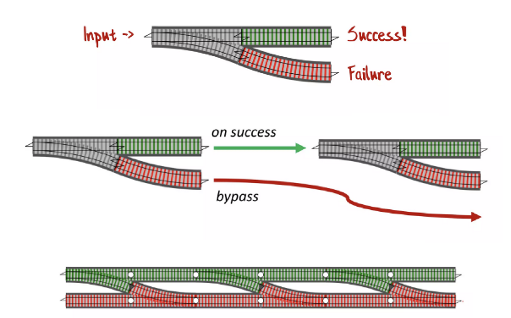

Functional Python
Practical Paradigms for Readable and Robust Code
Wenxin Jiang
Oct. 11, 2025
Who I am
- Wenxin Jiang, Ph.D. Student @ CityUHK
- Major in Biostatistics
- Research interests: Genetics, High Dimensional Statistics
An Illustrative Example
| Name |
Class |
Subject |
Score |
| Alice |
B01 |
Art |
85 |
| Bob |
B02 |
English |
74 |
| Charlie |
A03 |
Art |
Error |
| ... |
... |
... |
... |
Imperative Style: How To Do

FP Style: What To Do

What is FP?
Core: Pure Functions
- Functions with no side effects
- Avoid global state
- Same result for the same input
- One function, one task
What is FP?
| Aspect |
Functions |
Variables |
| Principle |
No Side Effects
|
Immutability, Avoid Global State
|
| Meaning |
Output depends
only on input
|
Data cannot be
modified
|
| Result |
Predictable &
Testable
|
Safe &
Thread-safe
|
Immutability: The Problem
❌ Mutable Approach
scores = [85, 74, 60] # Shared mutable state
def add_bonus(score_list):
for i in range(len(score_list)):
score_list[i] += 10 # Modifies original!
return score_list
original_scores = scores
bonus_scores = add_bonus(scores)
print(original_scores) # Output: [95, 84, 70] 😱 Changed!
⚠️ Unexpected mutation causes bugs!
Immutability: The Solution
✅ Immutable Approach
scores = [85, 74, 60] # Immutable approach
def add_bonus(score_list):
# Create new list, don't modify original
return [score + 10 for score in score_list]
original_scores = scores
bonus_scores = add_bonus(scores)
print(original_scores)
# Output: [85, 74, 60] ✓ Unchanged!
✓ Original data is safe!
Why FP?
- Readability: Focus on "what" rather than "how"
- Modularity: Small, isolated functions
- Robustness/Testability: Easier to test
Currying & Higher-Order Functions

Source: Currying takes your functions to a whole new level of flexibility and power!
Pipeline Style
$h(g(f(x))) = (h \circ g \circ f)(x)$
❌ Nested (Hard to read)
result = h(g(f(df), arg1=a), arg2=b)
✅ Pipeline (Clear flow)
result = df.pipe(f).pipe(g, arg1=a).pipe(h, arg2=b)
Railway Analogy for Function Composition

Source: Railway Oriented Programming
Railway Analogy for Error Handling

Source: Railway Oriented Programming
Other Interesting Concepts in FP
- Iterators:
for i in iter_obj:
- Map/Filter/Reduce:
map(abs, [-1, 1])
- List Comprehensions:
[x for x in range(9) if x % 2]
- Generators: Use
yield to produce a sequence of values lazily.
- Lazy Evaluation: Delay computation until necessary, improving performance.
Docs: Functional Programming HOWTO
Thank you for attention!